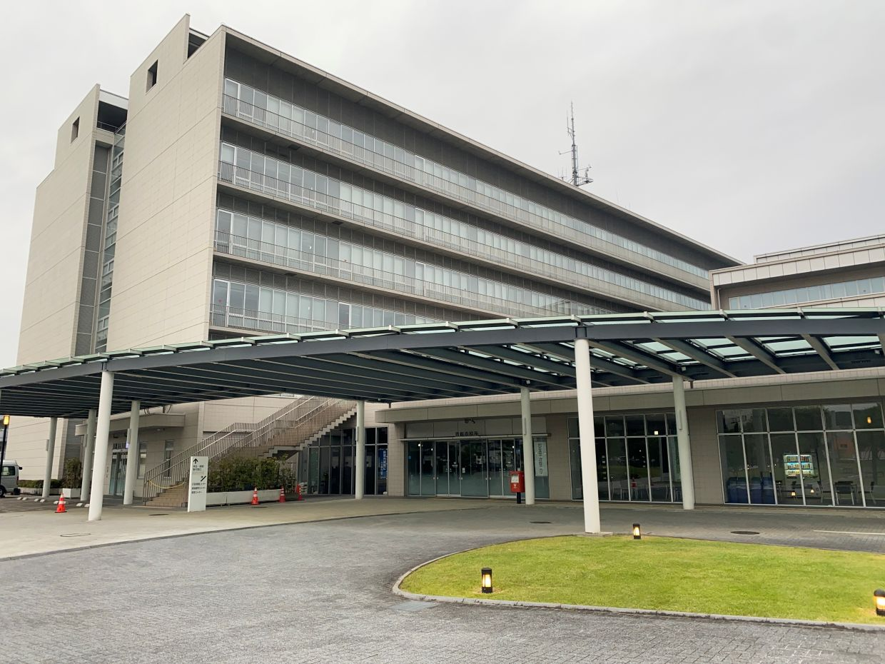
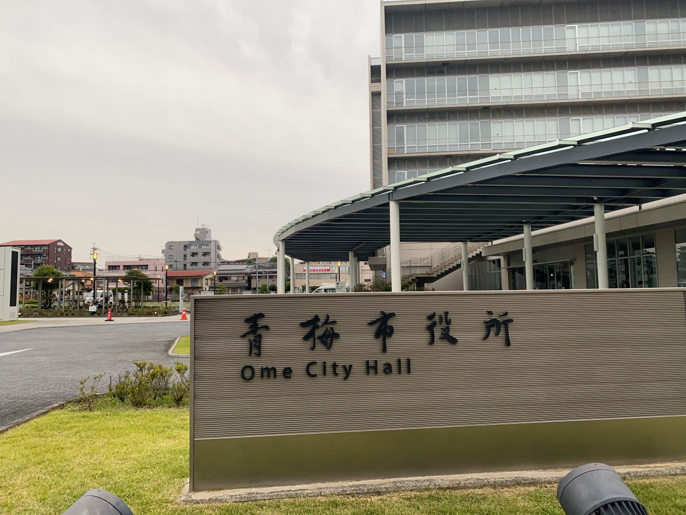

東京都 青梅市
役場


青梅は西多摩の中でも大きく、埼玉県側まで接しています。青梅鉄道公園がありSLが展示されていることや、昔ながらのホーローが残っている場所があるなど歴史的な価値を残した街ですが役場はきれいです。


青梅は西多摩の中でも大きく、埼玉県側まで接しています。青梅鉄道公園がありSLが展示されていることや、昔ながらのホーローが残っている場所があるなど歴史的な価値を残した街ですが役場はきれいです。